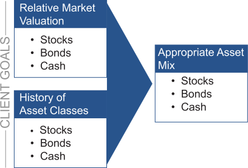

Tactical Asset Allocation
Tactical Asset Allocation has a more short-term focus, seeking to capitalize on short-term market conditions and anticipated market moves. This results in active shifting of the investments within a portfolio.
As the Tactical Asset Allocation chart shows, while client goals continue to be a factor, they are replaced with relative market valuation in combination with the historical performance of asset classes as the primary considerations in determining the appropriate asset mix for a portfolio. In other words, using a tactical method, the client’s goals and objectives are given less attention than the current market conditions and short-term market projections.
The following chart provides a summary of the primary differences between strategic and tactical asset allocation. Since strategic allocation is focused on client goals and is long-term oriented, it tends to result in investment activity that is oriented to rebalancing the portfolio from time to time to adjust for changes in market valuation and to keep the asset allocation in line with the investment plan. Tactical asset allocation, however, with its focus on market projections and short-term market conditions, tends to be much more trading oriented.
| Strategic | Tactical | |
|---|---|---|
| Time | Long-Term Oriented | Short-Term Oriented |
| Investment Activity | Portfolio Rebalancing | More Trading Oriented |
| Focus | Client Goals | Market Projections |